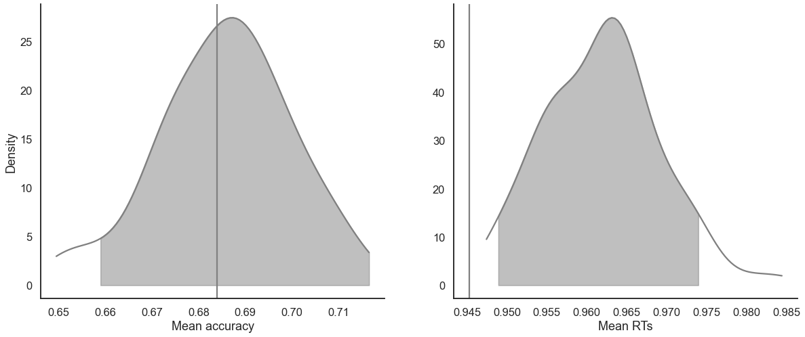
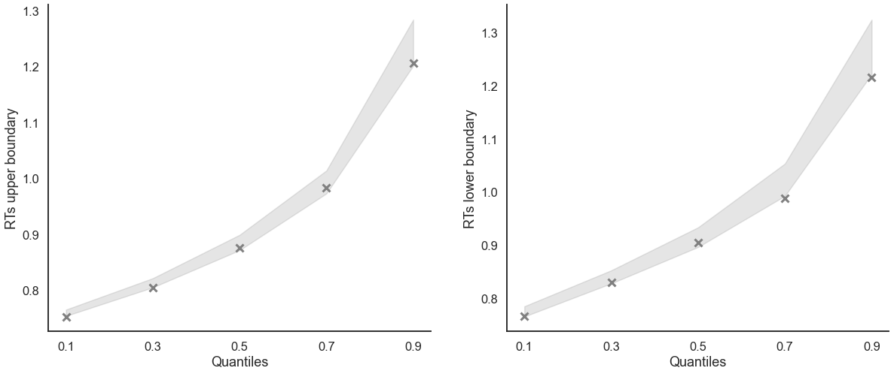
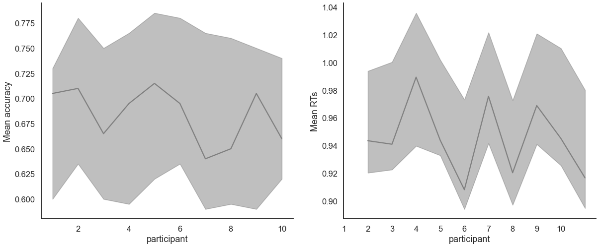

Parameter recovery of the hierarchical DDM with starting point bias¶
[1]:
import rlssm
import pandas as pd
Simulate group data¶
[2]:
from rlssm.random import simulate_hier_ddm
[3]:
data = simulate_hier_ddm(n_trials=200,
n_participants=10,
gen_mu_drift=.6, gen_sd_drift=.1,
gen_mu_threshold=.5, gen_sd_threshold=.1,
gen_mu_ndt=0, gen_sd_ndt=.01,
gen_mu_rel_sp=.1, gen_sd_rel_sp=.01)
[4]:
data.head()
[4]:
| drift | threshold | ndt | rel_sp | rt | accuracy | ||
|---|---|---|---|---|---|---|---|
| participant | trial | ||||||
| 1 | 1 | 0.583137 | 0.987302 | 0.686735 | 0.539299 | 0.998735 | 1.0 |
| 1 | 0.583137 | 0.987302 | 0.686735 | 0.539299 | 1.070735 | 1.0 | |
| 1 | 0.583137 | 0.987302 | 0.686735 | 0.539299 | 1.042735 | 1.0 | |
| 1 | 0.583137 | 0.987302 | 0.686735 | 0.539299 | 0.941735 | 0.0 | |
| 1 | 0.583137 | 0.987302 | 0.686735 | 0.539299 | 0.728735 | 1.0 |
[5]:
data.groupby('participant').describe()[['rt', 'accuracy']]
[5]:
| rt | accuracy | |||||||||||||||
|---|---|---|---|---|---|---|---|---|---|---|---|---|---|---|---|---|
| count | mean | std | min | 25% | 50% | 75% | max | count | mean | std | min | 25% | 50% | 75% | max | |
| participant | ||||||||||||||||
| 1 | 200.0 | 0.943520 | 0.208699 | 0.718735 | 0.797485 | 0.892235 | 1.022485 | 2.072735 | 200.0 | 0.705 | 0.457187 | 0.0 | 0.0 | 1.0 | 1.0 | 1.0 |
| 2 | 200.0 | 0.940994 | 0.209900 | 0.727699 | 0.800699 | 0.864699 | 1.023449 | 1.871699 | 200.0 | 0.710 | 0.454901 | 0.0 | 0.0 | 1.0 | 1.0 | 1.0 |
| 3 | 200.0 | 0.989416 | 0.231368 | 0.724431 | 0.829181 | 0.927931 | 1.100681 | 2.109431 | 200.0 | 0.665 | 0.473175 | 0.0 | 0.0 | 1.0 | 1.0 | 1.0 |
| 4 | 200.0 | 0.943833 | 0.199141 | 0.724853 | 0.810603 | 0.881353 | 1.024603 | 1.693853 | 200.0 | 0.695 | 0.461563 | 0.0 | 0.0 | 1.0 | 1.0 | 1.0 |
| 5 | 200.0 | 0.908154 | 0.169132 | 0.713534 | 0.779534 | 0.863034 | 0.988284 | 1.574534 | 200.0 | 0.715 | 0.452547 | 0.0 | 0.0 | 1.0 | 1.0 | 1.0 |
| 6 | 200.0 | 0.975655 | 0.221267 | 0.721440 | 0.805190 | 0.922940 | 1.078690 | 2.130440 | 200.0 | 0.695 | 0.461563 | 0.0 | 0.0 | 1.0 | 1.0 | 1.0 |
| 7 | 200.0 | 0.920378 | 0.194863 | 0.715958 | 0.779958 | 0.863958 | 0.986958 | 1.901958 | 200.0 | 0.640 | 0.481205 | 0.0 | 0.0 | 1.0 | 1.0 | 1.0 |
| 8 | 200.0 | 0.968912 | 0.232065 | 0.737607 | 0.813607 | 0.907607 | 1.024607 | 2.179607 | 200.0 | 0.650 | 0.478167 | 0.0 | 0.0 | 1.0 | 1.0 | 1.0 |
| 9 | 200.0 | 0.945165 | 0.211198 | 0.721690 | 0.786440 | 0.887690 | 1.031690 | 2.206690 | 200.0 | 0.705 | 0.457187 | 0.0 | 0.0 | 1.0 | 1.0 | 1.0 |
| 10 | 200.0 | 0.916707 | 0.182138 | 0.713282 | 0.793032 | 0.854282 | 0.991532 | 2.191282 | 200.0 | 0.660 | 0.474898 | 0.0 | 0.0 | 1.0 | 1.0 | 1.0 |
Initialize the model¶
[6]:
model = rlssm.DDModel(hierarchical_levels = 2, starting_point_bias=True)
Using cached StanModel
Fit¶
[7]:
# sampling parameters
n_iter = 5000
n_chains = 2
n_thin = 1
[8]:
model_fit = model.fit(
data,
thin = n_thin,
iter = n_iter,
chains = n_chains,
verbose = False)
WARNING:pystan:Maximum (flat) parameter count (1000) exceeded: skipping diagnostic tests for n_eff and Rhat.
To run all diagnostics call pystan.check_hmc_diagnostics(fit)
WARNING:pystan:1 of 5000 iterations ended with a divergence (0.02 %).
WARNING:pystan:Try running with adapt_delta larger than 0.8 to remove the divergences.
Checks MCMC diagnostics:
n_eff / iter looks reasonable for all parameters
1.0 of 5000 iterations ended with a divergence (0.02%)
Try running with larger adapt_delta to remove the divergences
0 of 5000 iterations saturated the maximum tree depth of 10 (0.0%)
E-BFMI indicated no pathological behavior
get Rhat¶
[9]:
model_fit.rhat.describe()
[9]:
| rhat | |
|---|---|
| count | 48.000000 |
| mean | 1.000216 |
| std | 0.000832 |
| min | 0.999608 |
| 25% | 0.999785 |
| 50% | 0.999931 |
| 75% | 1.000250 |
| max | 1.003504 |
calculate wAIC¶
[10]:
model_fit.waic
[10]:
{'lppd': -215.38853693761558,
'p_waic': 19.404973506529767,
'waic': 469.5870208882907,
'waic_se': 93.08498988214684}
Posteriors¶
[11]:
model_fit.samples.describe()
[11]:
| chain | draw | transf_mu_drift | transf_mu_threshold | transf_mu_ndt | transf_mu_rel_sp | drift_sbj[1] | drift_sbj[2] | drift_sbj[3] | drift_sbj[4] | ... | rel_sp_sbj[1] | rel_sp_sbj[2] | rel_sp_sbj[3] | rel_sp_sbj[4] | rel_sp_sbj[5] | rel_sp_sbj[6] | rel_sp_sbj[7] | rel_sp_sbj[8] | rel_sp_sbj[9] | rel_sp_sbj[10] | |
|---|---|---|---|---|---|---|---|---|---|---|---|---|---|---|---|---|---|---|---|---|---|
| count | 5000.00000 | 5000.000000 | 5000.000000 | 5000.000000 | 5000.000000 | 5000.000000 | 5000.000000 | 5000.000000 | 5000.000000 | 5000.000000 | ... | 5000.000000 | 5000.000000 | 5000.000000 | 5000.000000 | 5000.000000 | 5000.000000 | 5000.000000 | 5000.000000 | 5000.000000 | 5000.000000 |
| mean | 0.50000 | 1249.500000 | 0.589375 | 1.022242 | 0.695842 | 0.540491 | 0.615980 | 0.610770 | 0.555651 | 0.597908 | ... | 0.533295 | 0.549152 | 0.542901 | 0.543731 | 0.551264 | 0.533914 | 0.540464 | 0.541557 | 0.535163 | 0.533811 |
| std | 0.50005 | 721.759958 | 0.063240 | 0.020795 | 0.002528 | 0.010047 | 0.090463 | 0.088556 | 0.087786 | 0.084213 | ... | 0.014411 | 0.015547 | 0.013825 | 0.013736 | 0.016304 | 0.014446 | 0.013413 | 0.013768 | 0.014113 | 0.014361 |
| min | 0.00000 | 0.000000 | 0.310927 | 0.921859 | 0.686678 | 0.495924 | 0.285271 | 0.279029 | 0.103746 | 0.281845 | ... | 0.463370 | 0.486399 | 0.477806 | 0.486835 | 0.496881 | 0.461361 | 0.484642 | 0.482194 | 0.463834 | 0.469532 |
| 25% | 0.00000 | 624.750000 | 0.547754 | 1.009701 | 0.694202 | 0.533972 | 0.558756 | 0.554155 | 0.503171 | 0.545284 | ... | 0.525066 | 0.538592 | 0.534241 | 0.534627 | 0.539878 | 0.525499 | 0.532263 | 0.532903 | 0.527087 | 0.525269 |
| 50% | 0.50000 | 1249.500000 | 0.590838 | 1.022053 | 0.695765 | 0.540590 | 0.609461 | 0.607050 | 0.564436 | 0.595910 | ... | 0.534618 | 0.547207 | 0.542336 | 0.543294 | 0.549172 | 0.534935 | 0.540570 | 0.541297 | 0.536049 | 0.535202 |
| 75% | 1.00000 | 1874.250000 | 0.631290 | 1.035082 | 0.697352 | 0.546847 | 0.667059 | 0.660652 | 0.615438 | 0.649785 | ... | 0.543135 | 0.558301 | 0.550851 | 0.552077 | 0.561442 | 0.543638 | 0.548470 | 0.549809 | 0.544619 | 0.543486 |
| max | 1.00000 | 2499.000000 | 0.819045 | 1.161290 | 0.706705 | 0.574957 | 1.068503 | 1.049338 | 0.938611 | 0.946189 | ... | 0.588013 | 0.620178 | 0.611438 | 0.607811 | 0.631434 | 0.584709 | 0.604728 | 0.597346 | 0.587530 | 0.580611 |
8 rows × 46 columns
[12]:
import seaborn as sns
sns.set(context = "talk",
style = "white",
palette = "husl",
rc={'figure.figsize':(15, 8)})
Here we plot the estimated posterior distributions against the generating parameters, to see whether the model parameters are recovering well:
[13]:
g = model_fit.plot_posteriors(height=5, show_intervals='HDI')
for i, ax in enumerate(g.axes.flatten()):
ax.axvline(data[['drift', 'threshold', 'ndt', 'rel_sp']].mean().values[i], color='grey', linestyle='--')

Posterior predictives¶
Ungrouped¶
[14]:
pp_summary = model_fit.get_posterior_predictives_summary(n_posterior_predictives=100)
pp_summary
[14]:
| mean_accuracy | mean_rt | skewness | quant_10_rt_low | quant_30_rt_low | quant_50_rt_low | quant_70_rt_low | quant_90_rt_low | quant_10_rt_up | quant_30_rt_up | quant_50_rt_up | quant_70_rt_up | quant_90_rt_up | |
|---|---|---|---|---|---|---|---|---|---|---|---|---|---|
| sample | |||||||||||||
| 1 | 0.6945 | 0.962391 | 2.197891 | 0.772538 | 0.835900 | 0.912849 | 1.024506 | 1.284913 | 0.763387 | 0.817667 | 0.889661 | 0.989880 | 1.210068 |
| 2 | 0.6875 | 0.972205 | 2.128831 | 0.789912 | 0.846612 | 0.917595 | 1.029947 | 1.297444 | 0.761145 | 0.821161 | 0.896144 | 1.013587 | 1.272462 |
| 3 | 0.7185 | 0.953535 | 1.943573 | 0.775542 | 0.840298 | 0.903853 | 0.995460 | 1.212840 | 0.759105 | 0.807002 | 0.882815 | 0.992786 | 1.242357 |
| 4 | 0.6690 | 0.964448 | 1.639886 | 0.766117 | 0.842167 | 0.935386 | 1.045216 | 1.274126 | 0.760460 | 0.816299 | 0.890960 | 0.997052 | 1.239141 |
| 5 | 0.7140 | 0.958068 | 2.491421 | 0.774103 | 0.835102 | 0.902298 | 1.046443 | 1.293283 | 0.758927 | 0.814182 | 0.882505 | 0.998341 | 1.214300 |
| ... | ... | ... | ... | ... | ... | ... | ... | ... | ... | ... | ... | ... | ... |
| 96 | 0.6940 | 0.965422 | 1.790321 | 0.776907 | 0.840134 | 0.915141 | 1.034274 | 1.291142 | 0.760316 | 0.817846 | 0.893299 | 1.006333 | 1.251930 |
| 97 | 0.6860 | 0.965237 | 1.802255 | 0.781694 | 0.838914 | 0.916765 | 1.034170 | 1.276470 | 0.758694 | 0.810400 | 0.892872 | 1.002173 | 1.243979 |
| 98 | 0.6900 | 0.945802 | 1.970541 | 0.778855 | 0.830806 | 0.901765 | 1.005698 | 1.246457 | 0.760183 | 0.813759 | 0.873622 | 0.978405 | 1.198244 |
| 99 | 0.6730 | 0.963846 | 2.051680 | 0.769241 | 0.832737 | 0.901264 | 1.005779 | 1.240500 | 0.761126 | 0.821306 | 0.894967 | 1.010321 | 1.232217 |
| 100 | 0.7255 | 0.962605 | 1.983041 | 0.778801 | 0.845978 | 0.908516 | 1.032243 | 1.253230 | 0.760802 | 0.816462 | 0.884462 | 0.998102 | 1.233802 |
100 rows × 13 columns
[15]:
model_fit.plot_mean_posterior_predictives(n_posterior_predictives=100, figsize=(20,8), show_intervals='HDI');

[16]:
model_fit.plot_quantiles_posterior_predictives(n_posterior_predictives=100, kind='shades');

Grouped¶
[17]:
model_fit.get_grouped_posterior_predictives_summary(
grouping_vars=['participant'],
quantiles=[.3, .5, .7],
n_posterior_predictives=100)
[17]:
| mean_accuracy | mean_rt | skewness | quant_30_rt_low | quant_30_rt_up | quant_50_rt_low | quant_50_rt_up | quant_70_rt_low | quant_70_rt_up | ||
|---|---|---|---|---|---|---|---|---|---|---|
| participant | sample | |||||||||
| 1 | 1 | 0.665 | 1.006593 | 1.921762 | 0.845138 | 0.839538 | 0.927538 | 0.910538 | 1.039138 | 1.027538 |
| 2 | 0.725 | 0.981561 | 1.769151 | 0.905091 | 0.817091 | 0.953291 | 0.884291 | 1.132491 | 1.004091 | |
| 3 | 0.765 | 0.964544 | 1.303737 | 0.900769 | 0.807769 | 0.979769 | 0.888769 | 1.076569 | 1.010369 | |
| 4 | 0.620 | 0.942311 | 1.914656 | 0.827521 | 0.823121 | 0.869521 | 0.894021 | 0.961521 | 1.006721 | |
| 5 | 0.675 | 0.970690 | 1.987422 | 0.808845 | 0.813845 | 0.856645 | 0.900645 | 0.952645 | 1.020445 | |
| ... | ... | ... | ... | ... | ... | ... | ... | ... | ... | ... |
| 10 | 96 | 0.600 | 0.954822 | 1.784016 | 0.835707 | 0.797307 | 0.910407 | 0.857407 | 1.015407 | 0.976707 |
| 97 | 0.585 | 0.905839 | 1.457801 | 0.799894 | 0.796294 | 0.844694 | 0.862694 | 0.924294 | 0.975094 | |
| 98 | 0.695 | 0.935979 | 2.440021 | 0.822954 | 0.795354 | 0.878954 | 0.865954 | 0.965954 | 0.976154 | |
| 99 | 0.670 | 0.938059 | 1.825178 | 0.809854 | 0.800854 | 0.870854 | 0.856354 | 0.997354 | 0.961354 | |
| 100 | 0.660 | 0.950247 | 1.511256 | 0.811802 | 0.814502 | 0.877602 | 0.882102 | 1.012102 | 0.987502 |
1000 rows × 9 columns
[18]:
model_fit.plot_mean_grouped_posterior_predictives(grouping_vars=['participant'],
n_posterior_predictives=100,
figsize=(20,8));
